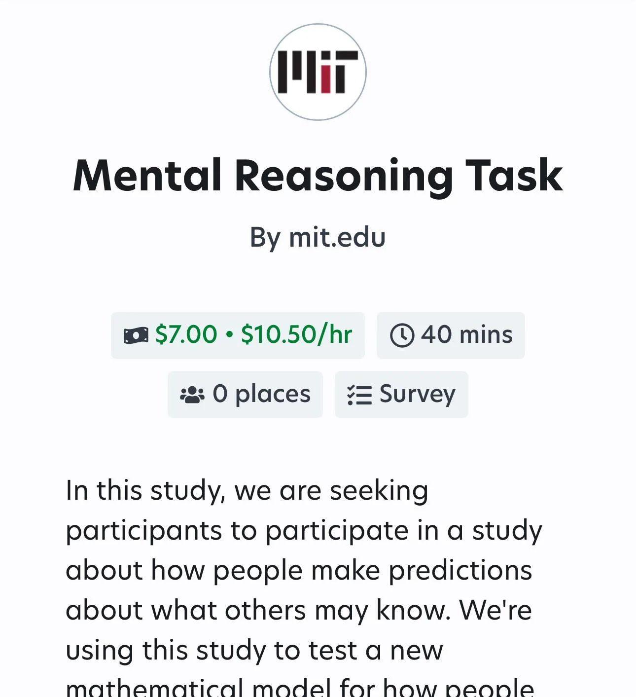

The Online Quest for Beer Money
Looking for a little extra cash often comes with pitfalls and timesucks

Jackie, a 24 year-old PhD student at a prominent Univerisity of California, is consistently busy with classwork, projects, and accademic meetings. For her, time and income are often tied up in essentials--rent, food, tuition, utilities, transportation, etc.
"TA jobs are hard to get, especially in the summer when they're less classes," she says, noting that they often don't fit her busy research schedule, "So I don't have guaranteed income for the summer."
For her and others like her online, not much is left for hobby collections or nights out. To supplement her income Jackie, and an online community centered around the idea of extra spending money, are looking to online studies, reviewing, and other gigs to supplement their income. Most of her efforts are focused on flexible income, not quite passive ways to make a couple dollars at random time slots.
"If it's something where I can just like go in for a day and do whatever... and it's kind of mindless then I dont think that's bad," she says.
This online community is called /r/beermoney on reddit and in their own words the forum provides a "community for people to discuss mostly online money making oportunities." This isn't a place for full time jobs though as users who come to this site specifically "shouldn't expect to make a living" but might find ways to make "extra cash on the side for your habits/needs." From this description the goals of this subreddit seem casual, like couponing. But, like couponing, earning beermoney often develops into a full blown hobby.
A post last week was set up last week to allow users to let us know what side hustles they made a profit from in April. The biggest numbers were far from humble, some users made nearly $3000 in extra income while most reported earnings from the $100 to $1000. Comments on this thread were formatted in long lists of various companies and programs next to how much each payout was. It's easy to see their time, effort, and emotional investment into these hobby jobs.
So, what are their biggest earners?

Source: Reddit /r/ProlificAC
Two names stick out from the rest and appear on nearly every "high earner" post: Prolific and UserTesting. Both sites are online survey and research sites which compensate beermoney seekers for their time in money. Prolific focuses more on providing Academic studies with a large survey base; this gives the surveyees complete control over their schedule and an easy way to access studies whenever they have free time. On the other hand UserTesting is a bit more competitive, there are a lot of people looking for payouts which can reach up to +$100 for live interviews. Some of the other earners are more intensive. dscout for example, gives users short "missions" which usually entails short videos or responses for research purposes. All three require some competitive vetting and selection.
Combining these methods, beermoney-ers can rake up a decent haul. See the table below for one example:
Source: Reddit: u/SarahC0605 on r/beermoney April 2025 Earnings
| Source | Description | Amount |
|---|---|---|
| Cloud | Probably Prolific Cloud Research platform | $630.07 |
| MTurk | Amazon Mechanical Turk microtasks | $98.23 |
| UserTesting | Website/app usability tests | $204.00 |
| DScout | Diary studies and video surveys | $320.00 |
| MyPoints | Points-based rewards for surveys/shopping | $130.00 |
| Swagbucks | Surveys, search, videos, cashback | $30.00 |
| Respondent | High-paying surveys/interviews | $45.00 |
| Other Random Payouts | Cash: $30 / Gift Cards: $54 | $84.00 |
| Total | $1541.30 | |
It's not all fun and games
Many of these play to pay income sources take up significantly more time than their reward in salaried work would be worth. Users are always on the look out for these timesucks and scams.